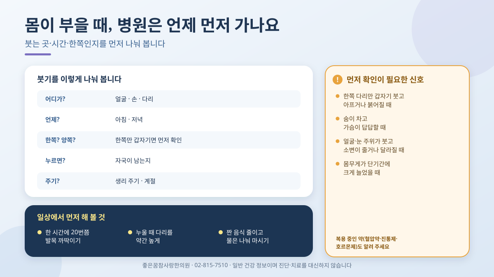

한 줄 답변
저녁에 다리가 붓는 정도는 오래 서 있거나 앉아 있는 습관과 관련 있는 경우가 많지만, 한쪽만 갑자기 붓거나 숨이 차거나 얼굴이 붓는 경우는 병원을 먼저 권합니다.
저녁에 다리가 붓는 정도는 오래 서 있거나 앉아 있는 습관과 관련 있는 경우가 많지만, 한쪽만 갑자기 붓거나 숨이 차거나 얼굴이 붓는 경우는 병원을 먼저 권합니다.
여쭙는 것
- 붓는 곳은 얼굴, 손, 다리 중 어디인가요?
- 아침에 심한가요, 저녁에 심한가요?
- 한쪽만 붓나요, 양쪽이 비슷한가요?
생활에서 해 볼 것
- 오래 서 있거나 앉아 있지 않고 중간에 걷기
- 누울 때 다리를 약간 높게 올려 두기
- 짠 음식 줄이고 물은 조금씩 나누어 마시기
한의원에서 함께 살필 것
- 저녁에 다리나 손이 붓는 경우 순환과 생활 습관을 함께 살핍니다.
- 오래 앉거나 서 있으면 부종이 심해지는 경우 몸의 흐름을 함께 살핍니다.
- 짠 음식을 먹은 날 붓기가 심한 경우 식사와 수분을 함께 살핍니다.
먼저 확인이 필요한 신호
- 한쪽 다리만 갑자기 붓고 아프거나 붉어지는 경우
- 숨이 차고 가슴이 답답한 경우
- 얼굴과 눈 주위가 붓고 소변이 줄거나 달라지는 경우

저녁에 양쪽 다리가 비슷하게 붓고 아침이면 빠지는 붓기는 생활 습관과 관련 있는 경우가 많지만, 한쪽만 갑자기 붓는 경우는 다르게 봐야 합니다. 붓기는 하루 중 몸의 수분이 어디에 몰리는지에 따라 달라집니다. 대부분은 생활 습관과 관련이 있지만 병원 확인이 필요한 부종도 있습니다.
왜 이런 불편이 생길 수 있나요
- 오래 서 있거나 앉아 있으면 다리 근육의 펌프 작용이 줄어 혈액과 수분이 아래쪽에 머물기 쉽습니다.
- 짠 음식을 먹은 날에는 몸이 수분을 더 붙잡아 손과 얼굴, 발이 부을 수 있습니다.
- 생리 전처럼 호르몬이 변하는 시기나 더운 날씨에도 붓기가 잘 생깁니다.
- 일부 약이나 심장·콩팥·간 질환, 갑상선 문제처럼 확인이 필요한 원인도 있어 모양을 나눠 보는 것이 중요합니다.

먼저 이렇게 여쭙니다
- 붓는 곳은 얼굴, 손, 다리 중 어디인가요?
- 아침에 심한가요, 저녁에 심한가요?
- 한쪽만 붓나요, 양쪽이 비슷한가요?
- 눌렀을 때 자국이 남나요?
- 붓기가 생리 주기나 계절에 따라 달라지나요?
일상에서 먼저 해 볼 수 있는 것
- 오래 서 있거나 앉아 있지 않고 중간에 걷기
- 누울 때 다리를 약간 높게 올려 두기
- 짠 음식 줄이고 물은 조금씩 나누어 마시기
- 꽉 끼는 양말이나 신발은 피하기
- 앉아서 일할 때 발목을 위아래로 까딱이는 운동을 한 시간에 20번쯤 하기
- 저녁에 15분쯤 다리를 심장보다 조금 높게 올려 쉬기

한의원에서 함께 살필 수 있는 경우
- 저녁에 다리나 손이 붓는 경우 순환과 생활 습관을 함께 살핍니다.
- 오래 앉거나 서 있으면 부종이 심해지는 경우 몸의 흐름을 함께 살핍니다.
- 짠 음식을 먹은 날 붓기가 심한 경우 식사와 수분을 함께 살핍니다.
- 손발이 차고 저녁마다 붓는 경우 순환과 잠, 식사를 함께 살핍니다.
좋은꿈참사랑한의원에서는 먼저 불편이 나타나는 때와 모양을 충분히 듣고, 필요하다고 판단될 때 진맥·설진으로 살핀 뒤 침이나 한약 상담 등 맞는 방법을 정합니다. 다른 의료기관 확인이 먼저 필요하면 그 순서를 안내합니다.
이렇게 기록해 오시면 상담이 쉬워집니다
- 붓는 부위와 시각, 눌렀을 때 자국이 남는지
- 아침과 저녁 체중(가능하면 며칠 연속)
- 그날 먹은 짠 음식과 물 마신 양
- 복용 중인 약(혈압약, 진통제, 호르몬제 등)

이런 증상은 먼저 확인이 필요합니다
- 한쪽 다리만 갑자기 붓고 아프거나 붉어지는 경우
- 숨이 차고 가슴이 답답한 경우
- 얼굴과 눈 주위가 붓고 소변이 줄거나 달라지는 경우
- 몸무게가 단기간에 크게 늘어난 경우
복용 중인 약은 처방한 의사와 상의 없이 줄이거나 끊지 않습니다. 위 신호가 있거나 갑자기 심해지면 한의원 진료를 기다리지 말고 119나 가까운 응급실을 이용하세요.
한눈에 보는 표
| 구분 | 핵심 |
|---|---|
| 여쭙는 것 | 붓는 곳은 얼굴, 손, 다리 중 어디인가요? 아침에 심한가요, 저녁에 심한가요? |
| 생활에서 해 볼 것 | 오래 서 있거나 앉아 있지 않고 중간에 걷기 누울 때 다리를 약간 높게 올려 두기 |
| 한의원에서 함께 살필 것 | 저녁에 다리나 손이 붓는 경우 순환과 생활 습관을 함께 살핍니다. 오래 앉거나 서 있으면 부종이 심해지는 경우 몸의 흐름을 함께 살핍니다. |
| 먼저 확인이 필요한 신호 | 한쪽 다리만 갑자기 붓고 아프거나 붉어지는 경우 숨이 차고 가슴이 답답한 경우 |
자주 묻는 질문
부기를 빼는 방법이 있나요?
생활 습관을 조절하는 방법을 안내하며 이유가 불분명하면 먼저 확인을 권합니다.
소변을 늘린다는 음료를 마셔도 되나요?
질환이나 복용 약에 영향을 줄 수 있어 먼저 상담하도록 안내합니다.
한의원에서는 무엇을 보나요?
붓는 시간과 부위, 식사와 수면을 묻고 몸 전체를 살핍니다.
압박 스타킹을 신어도 되나요?
오래 서 있는 날 도움이 되는 경우가 있지만, 한쪽만 붓거나 통증·열감이 있으면 신기 전에 병원 확인을 먼저 권합니다.
이 글은 일반적인 건강 정보이며 개인의 진단이나 치료를 대신하지 않습니다. 증상이 있거나 복용 중인 약이 있다면 진료를 통해 확인하세요. 치료 효과는 개인마다 다를 수 있습니다.
지난 이야기부터 이어서 묻습니다
좋은꿈참사랑한의원은 재진 때 지난번 이야기부터 이어서 여쭙니다. 진료시간과 예약은 오시는 길에서 확인하세요.
좋은꿈참사랑한의원은 재진 때 지난번 이야기부터 이어서 여쭙니다. 진료시간과 예약은 오시는 길에서 확인하세요.